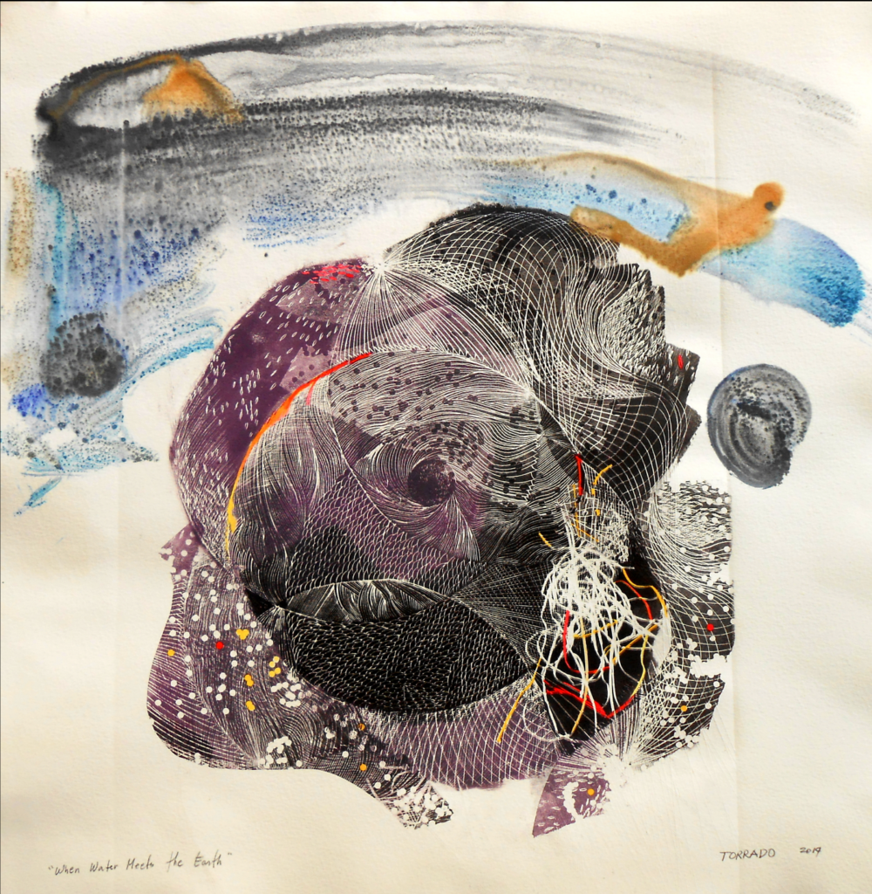
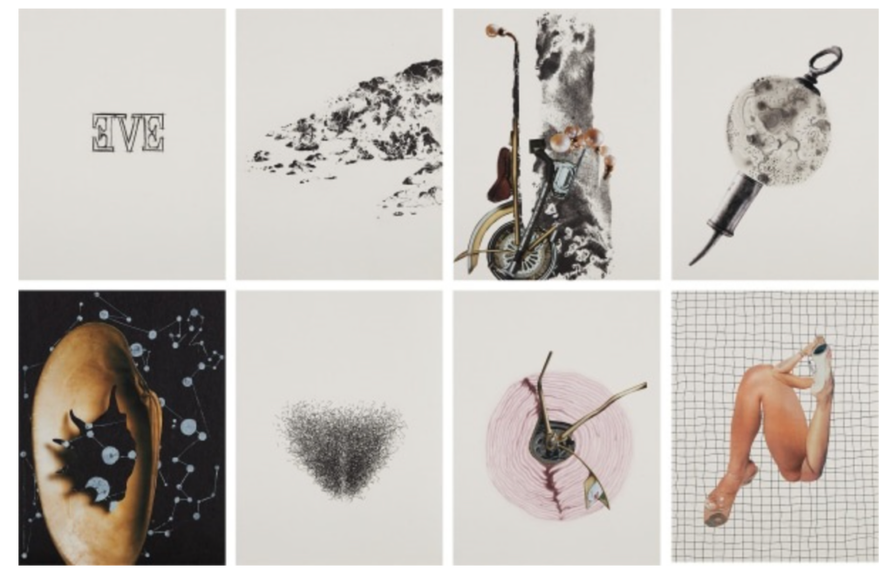
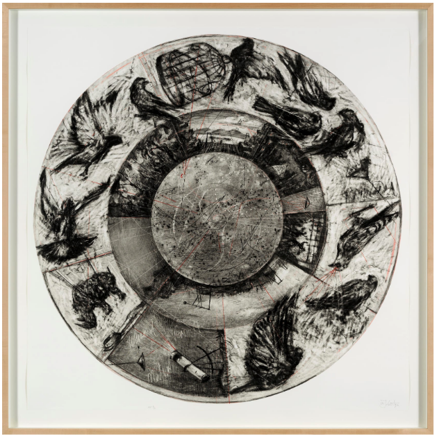
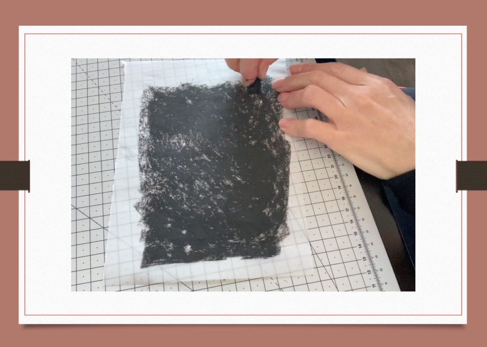
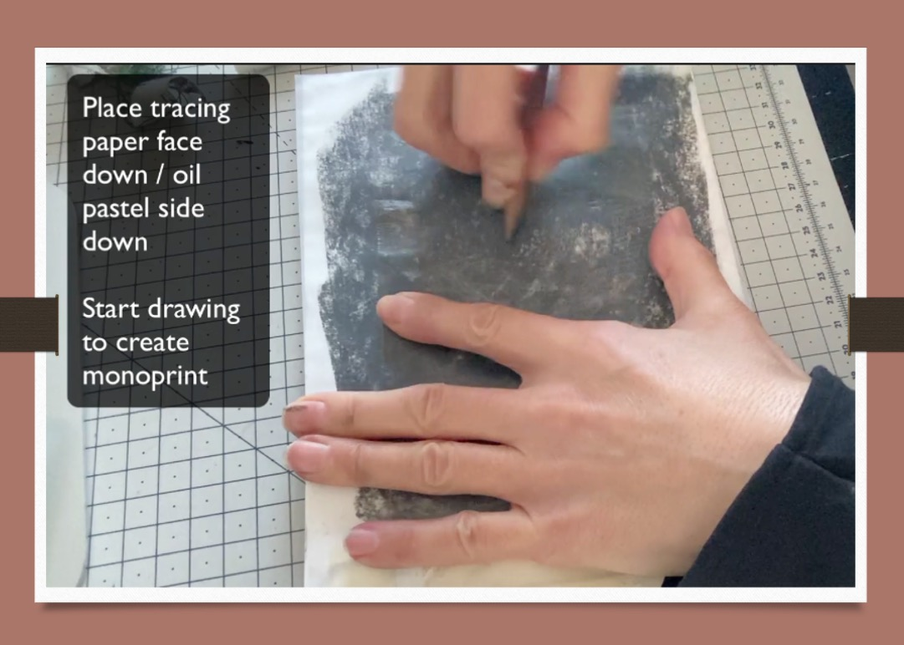
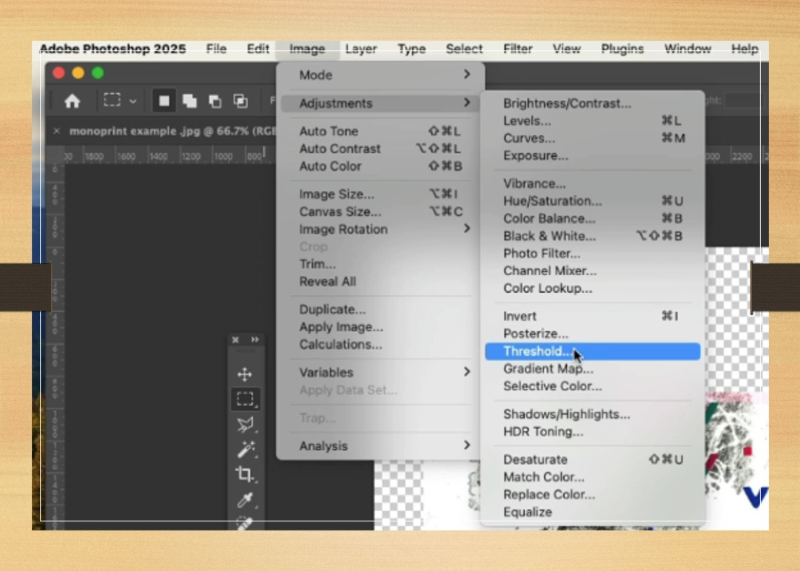
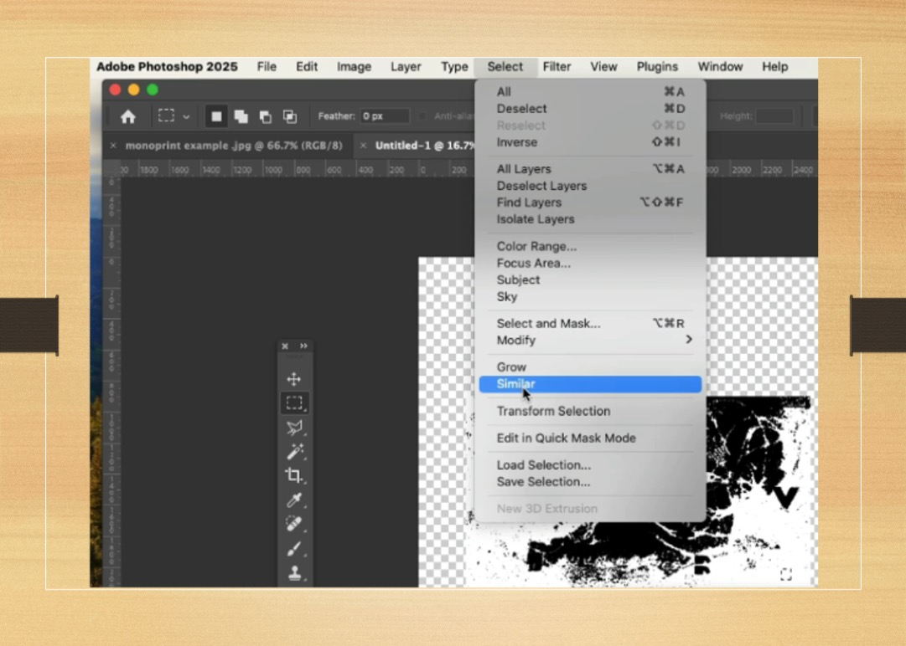
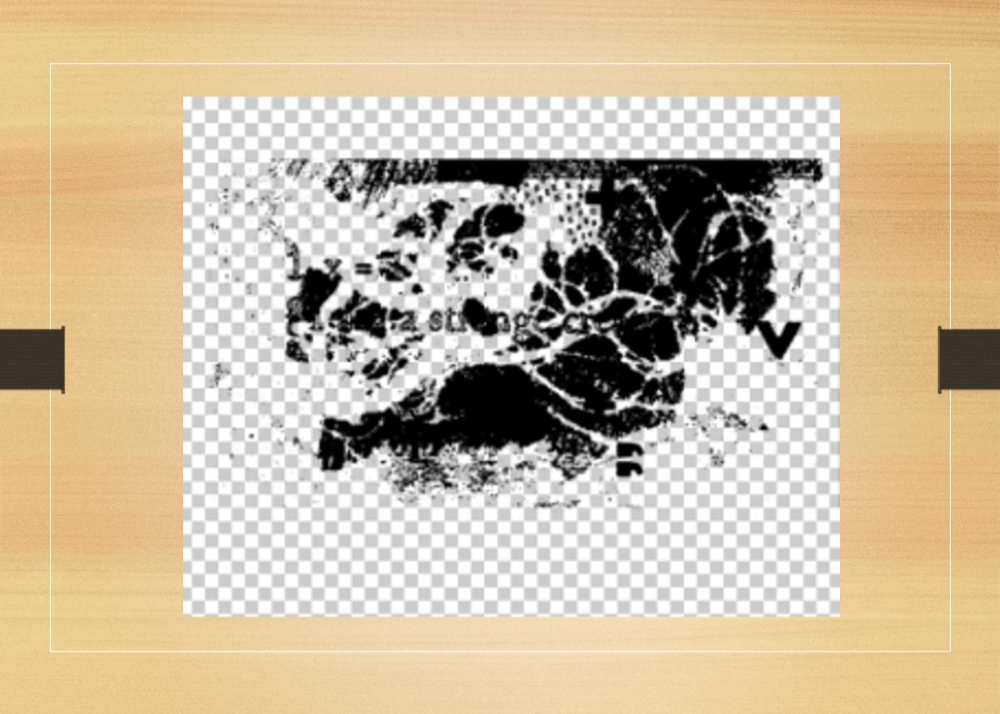
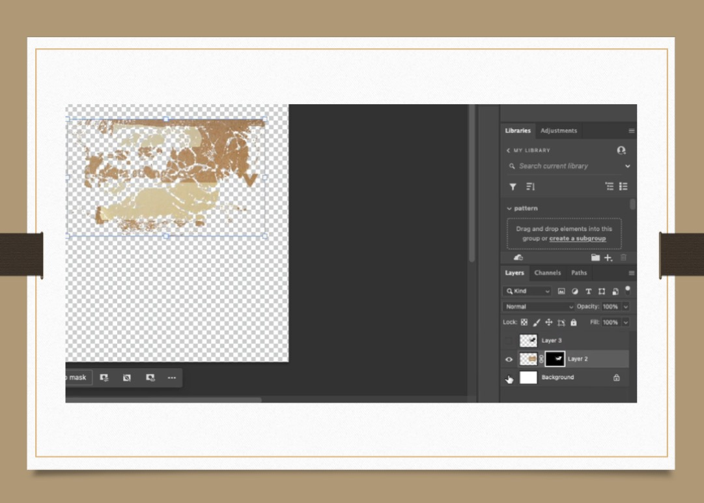

🎨 Monoprint Techniques
From Handmade Prints to Digital Textures
What You Will Learn
HOMEWORK
Make physical monoprints
TASK 1
Digitize your prints
TASK 2
Threshold & selection
TASK 3
Masks & blend modes
TASK 4
Apply to project
QUIZ
Test yourself
What is This Workshop?
You will learn how to create handmade monoprints using oil pastels and objects, then digitize and develop them in Photoshop to use as textures in your Term 2 fashion design project.
- Create unique, handmade textures with personal character
- Combine traditional craft with digital design
- Develop assets that strengthen your project's visual identity
- Build a library of textures you can reuse and adapt
Artist Inspiration
Look at these contemporary artists for inspiration on how to use textures and prints in your work:



Student Example

The Workshop Steps
Make 2–3 monoprints
Learn 4 Photoshop techniques
Use textures in your project
Upload to Padlet
Do this before class. Bring your scanned files on the day.
- Tracing paper
- Oil pastels (black works best)
- White paper
- Pencils
- Objects related to your project to use as stencils (leaves, string, lace, mesh, etc.)
📺 Watch This Video Before You Start
Monoprint Process: 4 Simple Steps
- Take a sheet of tracing paper
- Cover one side fully with black oil pastel
- Build up an even, dense layer

- Place stencil materials related to your project on plain white paper
- Lay the tracing paper on top — pastel side down
- Hold or tape lightly so it doesn't shift

- Use a pencil to rub firmly over the back of the tracing paper
- Press hard to transfer the pastel
- Cover all areas evenly

💡 Tip
- Try a spoon or smooth tool for more even pressure
- Vary the pressure to create lighter and darker areas
- Carefully lift the tracing paper
- Remove the stencil objects
- Your monoprint is now on the white paper

Troubleshooting
- Apply more oil pastel to the tracing paper
- Press harder when rubbing with the pencil
- Try using a spoon for more even pressure
- Use smooth white paper for best results
- Make sure tracing paper is thin enough
- Tape paper down to prevent shifting
Homework Checklist ✓
Bring your physical monoprints into Photoshop and prepare them for editing.
- Threshold — Converts images to pure black and white (no greys)
- Layer Mask — Hides parts of an image without deleting them
- Blend Modes — Different ways layers interact with each other
- Magic Wand — Selection tool that selects similar coloured areas
- Set scanner to 300 DPI or higher
- Scan as a colour image (even if black/white)
- Make sure the print lies flat on the scanner
- Save as JPG, PNG, or TIFF
💡 No Scanner?
- Use a phone camera in good, even lighting
- Hold the camera directly above the print
- Avoid shadows across the paper
- Open Photoshop
- Create a new A3 landscape document at 300 DPI
- Import your scan: File → Place Embedded
- Save a copy as PSD to preserve all layers

Task 1 Checklist ✓
Convert your print to high-contrast black and white, then remove the white background.
- Removes greys for a clean, graphic texture
- Makes it easier to select and delete white areas
- Creates strong contrast suitable for fashion design layouts
Processing Your Print in Photoshop
Convert your image to pure black and white:
- Go to Image → Adjustments → Threshold
- Move the slider until you like the contrast
- Click OK to apply

Select the white background to remove it:
- Use the Rectangular Marquee tool M
- Draw a selection around a white area
- Go to Select → Similar

Create transparency by removing the white:
- With white areas selected, press Delete
- This removes white, leaving only your texture
- Repeat for any remaining white pockets if needed
- Deselect with Cmd/Ctrl + D

Selection Tool Options
Best for selecting similar coloured areas:
- Press W
- Set Tolerance to 20–40 in the Options bar
- Click on the area you want to select
- Shift + Click to add
- Alt/Option + Click to subtract
Best for selecting shapes with straight edges:
- Press L then toggle to Polygonal Lasso
- Click points around the object edge
- Connect back to start to close the selection
- Copy: Cmd/Ctrl + C
- Paste: Cmd/Ctrl + V
💡 Tips
- Hold Shift to add multiple areas to your selection
- Go to Select → Modify → Feather to soften selection edges
- Always deselect with Cmd/Ctrl + D when finished
Task 2 Checklist ✓
Refine your texture with masks and blend it into your design.
📺 Working with Digital Masks
Enhancing Your Texture
Use a mask to control which parts of the texture appear:
- Click the Add Layer Mask button at the bottom of the Layers panel
- Use a black brush to hide parts of the texture
- Use a white brush to reveal them again

In the Layers panel, experiment with how your texture interacts with backgrounds:
- Multiply — Darkens underlying layers; great for placing texture onto light backgrounds
- Overlay — Adds contrast while keeping details
- Screen — Lightens underlying layers; useful for layering light textures
- Soft Light — Gentle contrast, good for subtle layering
Adjust the layer's opacity slider to control intensity.
Bring your black texture to life with colour:
- Go to Image → Adjustments → Hue/Saturation
- Tick Colorize
- Adjust Hue, Saturation, and Lightness sliders
💡 Tip
- Try a fill layer underneath set to a project colour for a quick recolour
- Use blend modes on the texture above to integrate the two layers
Task 3 Checklist ✓
Incorporate your developed texture into your Term 2 design and upload your work.
- Backgrounds — Add depth behind figures or product layouts
- Surface treatments — Apply onto fabric or garment renders
- Layered design — Build collage-style fashion sheets
- Accent details — Add textural interest to clean designs
Bringing It All Together
- Drag your texture layer into your Term 2 project file, or
- Use Cmd/Ctrl + C then Cmd/Ctrl + V to paste it into your project
- Use Cmd/Ctrl + T to transform
- Hold Shift while dragging corners to scale proportionally
- Press Enter to confirm
- Apply a blend mode to integrate the texture with your design
- Use a layer mask to hide areas that don't work
- Lower opacity if the texture feels too strong
- Try different colours to match your project palette
Student Example

- Created a physical monoprint using string
- Scanned at high resolution
- Used Threshold for high contrast
- Integrated it into their design project
- The handmade texture creates visual interest
- Digital processing keeps it clean and professional
- The texture adds depth to a flat design
- It relates to the project's theme and concepts
Submit Your Work
Upload to Padlet
All work must connect to your Term 2 design project.
1. Original Monoprints
Photos of your physical prints — at least 2–3 examples with a brief note on materials used
2. Digital Versions
Your developed textures showing how they sit in your Term 2 project, with a short note on your process
What You Learned Today
- Made monoprints with oil pastels and stencil objects
- Digitized your prints and set up a Photoshop document
- Applied Threshold and removed white areas with Select → Similar
- Used layer masks and blend modes to refine textures
- Applied your textures to your Term 2 design project
Check what you have learned today.
Part 1: Put the Steps in Order
Drag and drop the physical monoprint steps into the correct order:
↓ Drop steps here in the correct order